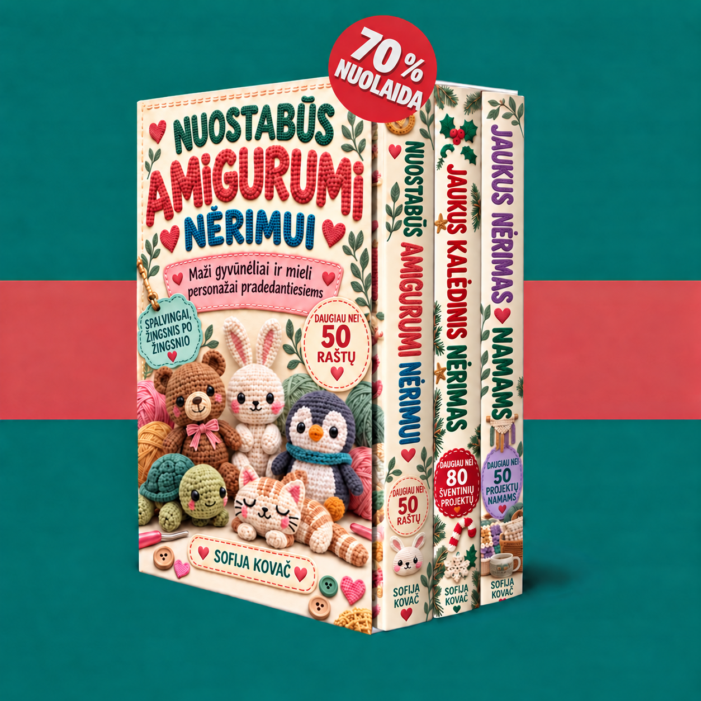

Sveiki atvykę į savo kolekciją. Atraskite tris knygas ir pradėkite nuo mažų gyvūnėlių, kalėdinių papuošimų ar jaukių projektų namams.

Knygos įkeliamos…
Įjunkite „JavaScript“, kad galėtumėte naudotis narių zona. PDF failus taip pat galite atverti per nuorodas apačioje.